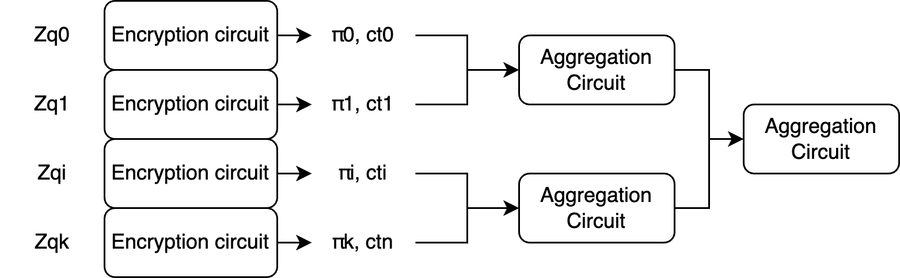
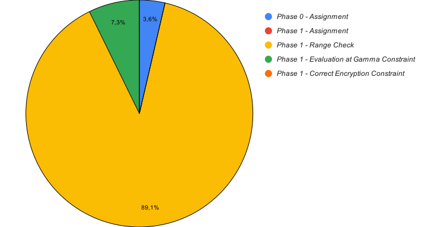

Greco: fast ZKP for valid FHE encryption
Thanks to Janmajaya Mall and Xiang Xie for discussions and reviews. You can leave comments of the hackMD version of this document here.
Also available on eprint
1. Introduction
Fully homomorphic encryption allows for evaluations of arbitrary functions over encrypted data. One of the most common applications of FHE is confidential outsourcing of computation. A user can encrypt their data, send it to a server that performs the (intensive) computation, and return back the encrypted result. In this scenario, the user is the only one affected by the outcome of the computation, so it is not necessary for them to prove to anyone that the submitted ciphertext to the server is properly formed.
However, there are other applications of FHE in which ciphertexts coming from different parties are submitted, such as sealed bid auctions, secret voting (namely, the vote is hidden), or FHE-EVMs, such as Zama's. In such applications, a party (or a network of parties) receives the ciphertexts and performs computation on top of them. The result of this computation is then decrypted. In these multi-party applications, the result is affecting more than one user. In these scenarios, it is important that each party proves that they submitted a well-formed ciphertext. Otherwise, the final result might be, unknowingly to the other participants, constructed from invalid data. Furthermore, key recovery attacks can be mounted if malformed ciphertexts are decrypted, assuming the resulting decryptions are shared with the attacker (which is the case in Zama's FHE-EVMs).
For example, in a secret voting application, the tally is computed by summing up the encrypted votes. Valid encrypted votes are of the form $E(0)$ and $E(1)$. But here's the trick; since the votes are encrypted, the application cannot tell the difference between a valid encrypted vote such as $E(1)$ and an invalid encrypted vote such as $E(145127835)$, which can mess up the whole election. Because of that, users must prove that (1) the ciphertext they submitted is a valid ciphertext. This might not be enough for the requirements of the application. Users should also prove that (2) the plaintext message they encrypted is a valid vote (for example, either a 1 or 0).
Greco prover allows to prove the validity of a Fully Homomorphic Encryption (FHE) ciphertext. Greco makes use of zero-knowledge proof to let a user prove that their ciphertext is well-formed. Or, in other words, that the encryption operation was performed correctly. The resulting proof can be, therefore, composed with additional application-specific logic and subject to public verification in a non-interactive setting. Considering the secret voting application, one can prove further properties of the message being encrypted or even properties about the voter, allowing the application to support anonymous voting as well.
The writeup focuses on BFV Secret Key Encryption and, eventually, extends the scheme to Public Key Encryption. Note that all the techniques described in this document can be easily applied to generate proof of correctness for any RLWE-based operation, such as Key Generation and Public/Secret Key Decryption.
The implementation of the techniques described hereafter is open source.
The logic for the BFV implementation at the core of the protocol is based on [KPZ21] and [HPS19]. The techniques employed to generate a proof of ciphertext correctness are based on [DLS19].
The main tricks employed when designing Greco are the following:
- Leveraging the Chinese Remainder Theorem to represent big integers coefficients via a set of single-precision integers of the size of 60 bits and embedding the ring reduction in the polynomial definition allows avoiding performing non-native arithmetic operations inside the field $Z_p$ in which the elements of the circuit (witness) are defined.
- Constraining polynomial multiplication with a 2-phase challenge circuit design with $O(n)$ complexity, dramatically reducing the cost of polynomial multiplication constrained with the direct method $O(n^2)$.
The circuit has been implemented using Halo2 as a proving system, and the results have shown that Greco can already be integrated into user-facing applications without creating excessive friction for the user. As an example, for parameters $\log{Q}=27$ and $n=1024$ targeting 128-bits of security according to the Homomorphic Encryption Standard, the prover time is equal to 685 ms benchmarked on an M2 Laptop. The verification time is extremely fast, around 3 ms.
Learnings from previous implementations such as zk-fhe and Sunscreen's zkp backend informed many of the design decisions adopted in Greco.
2. BFV
BFV is a leveled Fully Homomorphic Encryption (FHE) scheme based on the Ring-Learning with Errors (RLWE) problem.
A comprehensive and easy-to-digest introduction to the BFV scheme can be found at Inferati. This section is focused on the setup of a BFV scheme in its Residue Number System (RNS) setting and only its secret key encryption algorithm.
Let $Q$ be the ciphertext modulus and $t$ be the plaintext modulus. Let $R_Q$ denote the polynomial ring $\frac{Z_Q[X]}{X^N+1}$. In practice, we leverage RNS and use the Chinese Remainder Theorem (CRT) setting $Q = \prod{q_i}$ where $\log q_i < 61$ and the $q_i$ factor are pairwise coprime. This modification was originally suggested by [BEH+16] to make arithmetic operations faster as these no longer need to work with Big integer arithmetic. Note that $Q$ and $t$ are co-prime. Furthermore, each $q_i$ can be chosen as a prime number to leverage NTT to achieve fast polynomial multiplication.
Using this technique, an integer $x ∈ Z_Q$ can be represented by its CRT components $\{ x_i = x \mod q_i \in \mathbb{Z}_{q_i} \}_i$, and operations on $x$ in $Z_Q$ can be implemented by applying the same operations to each CRT component $x_i$ in its own ring $Z_{q_{i}}$.
The secret key encryption of a message $M$ is defined as:
$$ Ct = (Ct_0, Ct_1) = ([A \cdot s + E + K]_Q, -A) $$Where $A \leftarrow R_Q, s \leftarrow \chi_{key}, E \leftarrow \chi_{error}$ and $K = \lceil \frac{Q [M]_t}{t} \rfloor$ (as described in section 3.1 of [KPZ21].
Given that $Q$ and $t$ are co-prime [A], one can calculate $K$ directly in RNS using the equality $$ \lceil \frac{Q [M]_t}{t} \rfloor = \frac{Q[M]_t - [QM]_t}{t} = -t^{-1}[QM]_t \mod q_i $$
We will denote the scalar $-t^{-1}$ with $K_0$ as the negative integer of the multplicative inverse of $t \mod q_i$ and the polynomial$[QM]_t$ with $K_1$.
Therefore,
$$ Ct_i = (Ct_{0,i}, Ct_{1,i}) = ([A_i \cdot s + E + K_{0,i}K_{1}]_{q_i}, -A_i) $$
Where $i$ indicates the $i$-th CRT decomposition of the ciphertext $Ct$ in the basis $q_i$, operations in $R_q$ are implemented directly in CRT representation. Note that when working in the RNS setting, uniform elements $A \leftarrow R_Q$ are chosen directly in the CRT basis by drawing uniform values $A_i \leftarrow R_{q_i}$ for each $i$-th CRT decomposition (section 4.3 of [HPS19]).
3. Proof of Valid Ciphertext Formation
3.1 zkSNARK Logic
To generate a Proof of Valid Ciphertext Formation of a message polynomial $M$ under the BFV secret key encryption algorithm requires translating the algorithm into a zkSNARK Circuit. The zero-knowledge property allows the prover to generate such proof without revealing any detail related to secret inputs, such as the secret key $s$ or the message $M$. The snark property allows for fast and succint verification of such proof.
The main challenge that appears when translating an FHE algorithm into a zk circuit is the different groups in which the element of the circuit and the coefficients of the polynomials involved in the FHE scheme live: - The elements of a circuit are defined in a group $G$ of order $p$, $Z_p$. All the operations inside a circuit are performed $\mod p$. - The coefficients of $Ct_{0,i}$ are defined in the group $Z_{q_i}$. All the polynomial operations are performed in the ring $R_{q_i}$, namely modulo the cyclotomic polynomial $X^N+1$.
The assumption is that $Q = \prod q_i$ where $\log{q_i} < 61$ and $\forall q_i, q_i << p$. This assumption is required to avoid the coefficients of the polynomial ever overflowing the prime $p$ and potentially pass the range checks constraints (more on that later) even if when they shouldn't.
The polynomial ring $\frac{Z_{q_i}[X]}{X^N+1}$ is denoted as $R_{q_i}$. Any polynomial $H \in R_Q$ is represented via its CRT components $H_i \in R_{q_i}$.
Polynomial multiplications and additions in the ring $Z_{q_i}[X]/X^N+1$ are operations that are non-native to the prime field of the circuit, therefore these operations are really expensive. The main trick employed here to alleviate the cost of such operations is to embed the ring reduction inside the polynomial definition. For example, the modulo reduction of $y= z \mod n$ can be constrained inside the circuit as $y = q \cdot n + z$ with $q$ that can be pre-computed outside the circuit.
Let's first outline the operation that needs to be verified and therefore translated into circuit constraints:
$$ A_i \cdot s + E + K_{0,i}K_{1} = Ct_{0,i} \mod {R_{q_i}} $$
Note that no check needs to be performed on the correct formation of $Ct_{1, i}$ since this is equal to the negative of the public sampled polynomial $A_i$.
And define
$$ A_i \cdot s + E + K_{0,i}K_{1} = \hat{Ct_{0,i}} $$
Where $\hat{Ct_{0,i}}$ is $Ct_{0,i}$ before the reduction inside the ring ${R_{q_i}}$ such that
$$ \hat{Ct_{0,i}} = Ct_{0,i} \mod {R_{q_i}} $$
One can express the equation above $\mod{Z_{q_i}}$ as: $$ \hat{Ct_{0,i}} = Ct_{0,i} - R_{2, i} (X^N+1) \mod {Z_{q_i}} $$
Where $(X^N+1)$ is the cyclotomic polynomial that defines the ring of the ciphertext space.
One can further express the equation in $Z$ as: $$ \hat{Ct_{0,i}} = Ct_{0,i} - R_{2, i} (X^N+1) - R_{1, i}q_i $$
Since $q_i << p$, the equation stays unchanged in $Z_p$:
$$ \hat{Ct_{0,i}} = Ct_{0,i} - R_{2, i} (X^N+1) - R_{1, i}q_i \mod{Z_p} $$
Or, in its extended form:
$$ Ct_{0,i} = A_i \cdot s + E + K_{0,i}K_{1} + R_{2, i} (X^N+1) + R_{1, i}q_i \mod{Z_p} $$
Note that the relation is true in $Z_p$, the domain of the elements of the circuit, without having to perform any further reduction or non-native arithmetic operations.
To prove that $Ct_{0, i}$ is correctly formed, it is needed to prove that the equation above holds. This can be rewritten using matrices as follows:
$$ \begin{bmatrix} A_i & 1 & K_{0,i} & (X^N+1) &q_i\\ \end{bmatrix} \times \begin{bmatrix} s \\ E \\ K_1 \\ R_{2, i} \\ R_{1, i} \end{bmatrix} =Ct_{0,i} $$or
$$ U_i \times S_i =Ct_{0,i} $$
Note the polynomials (and scalars) in the matrix $U_i$ are public, namely not only by the person performing the encryption. The matrix $U_i$ is public. In contrast, the polynomials of the matrix $S_i$ should only be known by the user who performs the encryption and, therefore, is private. Revealing some of these polynomials could either reveal the message or leak information that would allow solving the search RLWE problem.
One naive way to render this relation in a snark constraint would be to perform the matrix multiplication inside the circuit and expose the matrix $U_i$ and the resulting ciphertext $Ct_{0, i}$ as public inputs. This approach involves many multiplications between large-degree polynomials. In particular, considering two polynomials $f$ and $g$ of degree $n$, performing the polynomial multiplications $fg=h$ using the direct method would generate:
- $(n+1)^2$ multiplication constraints [B]
- $n^2$ addition constraints [B]
A more efficient way to perform the polynomial multiplications inside the circuit would be to evaluate the polynomials $f$, $g$, and $h$ at a random point $\gamma$ and enforce that $f(\gamma) * g(\gamma) = h(\gamma)$ which would be true if $fg=h$ according to Schwartz-Zippel lemma. This would generate:
- $n$ multiplication constraints and $n$ addition constraints to evaluate $f(\gamma)$
- $n$ multiplication constraints and $n$ addition constraints to evaluate $g(\gamma)$
- $2n$ multiplication constraints and $2n$ addition constraints to evaluate $f(\gamma)$
With this trick, the complexity of constraining a polynomial multiplication is reduced from $O(n^2)$ to $O(n)$.
The constraint is then reduced to proving that.
$$ \begin{bmatrix} A_i(\gamma) & 1 & K_{0,i} & (\gamma^N+1) &q_i\\ \end{bmatrix} \times \begin{bmatrix} s(\gamma) \\ E(\gamma) \\ K_1(\gamma) \\ R_{2, i}(\gamma) \\ R_{1, i}(\gamma) \end{bmatrix} =Ct_{0,i}(\gamma) $$or
$$ U_i(\gamma) \times S_i(\gamma) =Ct_{0,i}(\gamma) \tag{1} $$
The approach of verifying that the polynomial relation holds by evaluating if it holds at $\gamma$ was first introduced by [DLS19]. They propose an interactive protocol in which the prover first commits to the secret matrix $S_i$ and, after receiving the challenge $\gamma$ from the verifier, the prover will then prove that the coefficients of the polynomials of $S_i$ are in the expected range and prove that $(1)$ holds.
In order to make the approach non-interactive, the strategy adopted by Greco is to leverage the Fiat-Shamir heuristic as follows:
- Fill the witness table with the secret polynomials of $S_i$ during the first phase of proof generation
- Extract the commitment of the witness so far and hash it to generate the challenge $\gamma$
- Prove that the coefficients of the polynomials of $S_i$ are in the expected range during the second phase of proof generation
- Use the challenge $\gamma$ to prove that $(1)$ holds during the second phase of proof generation
Note that since the polynomials inside the $U_i$ matrix are public, and so is the polynomial $Ct_{0, i}$, it is possible to directly pass their evaluations at $\gamma$ as public input of the circuit to the second phase. The same does not apply to the polynomials of $S_i$: for those polynomials, their evaluations at $\gamma$ need to be constrained inside the circuit.
Since the polynomials written inside the matrix $S_i$ are private, it is also necessary to check that their coefficients live in the expected range. For a thorough analysis of the expected range of the matrix $S_i$ polynomial coefficients, check paragraph 3.3.
Proof of valid encryption of a message polynomial $M$ under the BFV secret key encryption scheme requires incorporating the operations that define the algorithm inside a ZK SNARK Circuit. This can be done by writing the following constraints:
- The coefficients of the matrix $S_i$ live in the expected range.
- $U_i(\gamma) \times S_i(\gamma) =Ct_{0,i}(\gamma)$
3.2 Calculating $R_{1, i}$ and $R_{2, i}$
$R_{1, i}$ and $R_{2, i}$ can be precomputed outside of the circuit as follows
Since, $$ \hat{Ct_{0,i}} = Ct_{0,i} - R_{2, i} (X^N+1) \mod {Z_{q_i}} $$ $$ R_{2, i} = \frac{Ct_{0,i} - \hat{Ct_{0,i}}}{(X^N+1)} \mod {Z_{q_i}} $$
Since $deg(X^N+1) = N$ and $deg(\hat{Ct_{0,i}}) = 2(N-1)$, $deg(R_{2, i})= 2(N-1) - N = N-2$.
Since, $$ \hat{Ct_{0,i}} = Ct_{0,i} - R_{2, i} (X^N+1) - R_{1, i} $$ $$ R_{1, i} = \frac{Ct_{0,i} - \hat{Ct_{0,i}} - R_{2, i} (X^N+1)}{q_i} $$
Since $deg(\hat{Ct_{0,i}}) = 2(N-1)$, the degree of the numerator is $2(N-1)$ and therefore $deg(R_{1, i})= 2(N-1)$.
3.3. Range Checks
The goal here is to define the expected range of the coefficients of the polynomials included in the matrix $S_i$. Defining the ranges would allow us to write the related constraints. Any malicious prover that is trying to generate a ciphertext starting from invalid secret polynomials would not be able to generate a valid proof. In particular, these polynomials are
$$ \begin{bmatrix} s \\ E \\ K_1 \\ R_{2, i} \\ R_{1, i} \end{bmatrix} $$These ranges are:
- $s = [-1, 1]$
- $E = [-B, B]$
- $K_1 = [-\frac{t - 1}{2}, \frac{t - 1}{2}]$
- $R_{2, i} = [-\frac{q_i - 1}{2}, \frac{q_i - 1}{2}]$
- $R_{1, i} = [\frac{- ((N+2) \cdot \frac{q_i - 1}{2} + B +\frac{t - 1}{2} \cdot |K_{0,i}|)}{q_i}, \frac{(N+2) \cdot \frac{q_i - 1}{2} + B + \frac{t - 1}{2} \cdot |K_{0,i}|}{q_i}]$
A more extended analysis of these ranges can be found at [C]
Note that when assigned to the circuit, the coefficients of the polynomial must be in the prime field $[0, p)$. Negative coefficients $-z$ are assigned as field elements $p - z$.
Let's take the polynomial $E$ as an example. The coefficients of $E$ live in the range $[-B, B]$. This means that when assigned to the circuit, the coefficients of $E$ must live in the ranges $[0, B]$ or $[-B, p)$. Enforcing the range check in this manner has the downside of requiring the performance of two range checks and adding an additional OR constraint to that. A more efficient way to perform such a range check is to normalize the coefficients such that the coefficients of $E$ must live in the range $[0, 2B]$. The normalization is constrained inside the circuit by adding $B$ to each coefficient of $E$. Note that the range check is secure as long as $2B < p$. This normalize operations before performing the actual range check is constraint to each of the polynomial of $S_i$.
In general, for each secret polynomial, given their upper bound $Ub$, the relation $2Ub < p$ must hold in order to avoid any overflow issue. This is true under the assumption $\log{q_i} < 61$.
3.4. Proving Correctness of k Ciphertexts
In the RNS setting of BFV, each ciphertext $Ct$ defined in the ring $R_Q$ is represented using its CRT components $\{ Ct = Ct_i \mod R_{q_i} \}_i$. Given the assumption that $Q = \prod q_i$ where $\log{q_i} < 61$, this allows the encryption to be performed more efficiently by performing single-precision integers arithmetic operations instead of big integers.
In particular, considering the encryption operation, small integers such as noise and key coefficients are drawn from $\chi_{error}$ and $\chi_{key}$ as single-precision integers, while uniform elements in $a ← Z_{q}$ are chosen directly in the CRT basis by drawing uniform values $a_i ← Z_{q_{i}}$ for all $i$. All the operations that are supposed to be performed in $Z_{q}$ are performed in $Z_{q_{i}}$ for each $i$-th decomposition.
To prove the correct computation of a ciphertext starting from a message, it is needed to prove the computation of each of the $k$ ciphertexts $Ct_{q_i}$. There are two ideas that can be explored here.
3.4.1. Parallel Proof Generation
This means that a π of correct encryption needs to be generated for each $i$. The good news is that these proofs can be generated in parallel. Furthermore, these proofs (for each $Z_{qi}$) can eventually be aggregated in a single proof that verifies the encryption for each smaller modulus. In this way, the user only has to verify a single proof.

When performing the first recursion, it is important to check whether the common polynomials across each $i$-th encryption circuit are matching. These polynomials are $S$, $E$, $K_1$
3.4.2. Proving the correctness of multiple ciphertexts in the same proof
Apparently, this approach seems to be the naive version of approach 1. In reality, there are some benefits to this approach, too. In the previous approach, the constraints on the common polynomials $S$, $E$, and $K_1$ are enforced within each $i$-th encryption circuit. These constraints are the range checks on these polynomials and the evaluation at $\gamma$ (which will be different for each $i$-th circuit) of these polynomials. In the previous approach, there are, therefore, some constraints duplicated $n$ times over the same polynomials.
In this second approach, the correctness of the $n$ ciphertexts is proven inside a single circuit. In this way, the constraints over $S$, $E$, and $K_1$ are applied only once.
In practice, the snark is designed as follows:
- Commit the polynomials of each $S_i$ matrix during the first phase. Since $S$, $E$, $K_1$ are common to each $S_i$ matrix, these are committed only once.
- Extract the commitment of the witness so far and hash it to generate the challenge $\gamma$
- Prove that the coefficients of the polynomials of each $S_i$ matrix are in the expected range during the second phase. Here, the range checks on the polynomials $S$, $E$, and $K_1$ have to be performed only once.
- Use the challenge $\gamma$ to prove that $(1)$ holds during the second phase for each $i$-th ciphertext. Again, the evaluation of $S(\gamma)$, $E(\gamma)$, $K_1(\gamma)$ need to be constrained only once and then reused across each $i$-th $(1)$ relation.
Given that $k$ is generally very small, this approach allows us to save some duplicated constraints and the overhead given by the recursion approach. On the other side, it sacrifices the parallelization benefit given by the recursion-based approach.
3.5. Circuit Implementation
Greco Prover has been implemented in Halo2 and is available here. The circuit logic is split between phase0 and phase1. The implementation details are based on the setting described in the paragraph 3.4.2. Note that setting $k$ to 1 would result in a proof of a single ciphertext.
Parameters such as $k$ (the number of ciphertexts), the degree of the cyclotomic polynomial defining the ring $N$, the range check bounds and the values of the scalars qis[] and k0is[] must be defined during key generation and are encoded into the constraining structure of the circuit since then. This implies that each tuple (n, qis[], t) results in different circuit artifacts.
Phase 0
Assignment
In this phase, the polynomials of each matrix $S_i$ are assigned to the circuit. Namely:
* polynomials s, e, and k1 are assigned to the witness table. This has to be done only once, as these polynomials are common to each $S_i$ matrix
* polynomials r1i, r2i are assigned to the witness table for each $S_i$ matrix
Witness values are elements of the finite field $\mod{p}$. Negative coefficients $-z$ are assigned as field elements $p - z$.
At the end of phase 0, the witness generated so far is interpolated into a polynomial and committed by the prover. The hash of this commitment is used as a challenge and will be used as a source of randomness $\gamma$ in Phase 1. This feature is made available by Halo2 Challenge API.
Phase 1
In this phase, the following constraints are enforced:
- The coefficients of each matrix $S_i$ are in the expected range.
- $U_i(\gamma) \times S_i(\gamma) =Ct_{0,i}(\gamma)$
Assignment
- Assign evaluations to the circuit:
ai(gamma),ct0i(gamma)for each $U_i$ matrix - Assign
cyclo(gamma)to the circuit. This has to be done only once, as the cyclotomic polynomial is common to each $U_i$ matrix - Expose
ai(gamma),ct0i(gamma)for each $U_i$ matrix - Expose
cyclo(gamma)as public input
Since the polynomials cyclo, ai, and ct0i are known to the verifier, the evaluation at $\gamma$ doesn't need to be constrained inside the circuit. Instead, this can be safely performed (and verified) outside the circuit.
Range Check
The coefficients of the private polynomials from each $i$-th matrix $S_i$ are checked to be in the correct range.
* Range check polynomials s, e, k1. This has to be done only once, as these polynomials are common to each $S_i$ matrix
* Range check polynomials r1i, r2i for each $S_i$ matrix
Since negative coefficients -z are assigned as p - z to the circuit, this might result in very large coefficients. Performing the range check on such large coefficients requires large lookup tables. To avoid this, the coefficients (both negative and positive) are normalized by adding to their upper bound $Ub$ to make the resulting coefficient in the range $[0, 2 Ub]$, and then the range check is performed.
Evaluation at $\gamma$ Constraint
Contrary to the polynomials cyclo, ai, and ct0i, the polynomials belonging to each $S_i$ matrix are not known by the verifier. Therefore, their evaluation at $\gamma$ must be constrained inside the circuit.
- Constrain the evaluation of the polynomials
s,e,andk1at $\gamma$. This has to be done only once, as these polynomials are common to each $S_i$ matrix - Constrain the evaluation of the polynomials
r1i,r2iat $\gamma$ for each $S_i$ matrix
Correct Encryption Constraint
Prove that $U_i(\gamma) \times S_i(\gamma) =Ct_{0,i}(\gamma)$. This can be rewritten as ct0i = ct0i_hat + r1i * qi + r2i * cyclo, where ct0i_hat = ai * s + e + k1 * k0i.
This constraint is enforced by proving that LHS(gamma) = RHS(gamma). According to the Schwartz-Zippel lemma, if this relation between polynomials, when evaluated at a random point, holds true, then the polynomials are identical with overwhelming probability. Note that qi and k0i (for each $U_i$ matrix) are constants to the circuit encoded during key generation.
* Constrain that ct0i(gamma) = ai(gamma) * s(gamma) + e(gamma) + k1(gamma) * k0i + r1i(gamma) * qi + r2i(gamma) * cyclo(gamma) for each $i$-th CRT basis
4. Prover and Verifier Scheme
This section describes the main algorithms of the Greco Scheme.
KeyGen
- $Greco.KeyGen(\lambda)=pk, vk$
The application developer chooses the parameters for the FHE scheme, given the security parameters and the required fhe circuit depths identified by $\lambda$. These are the parameters $t, Q, n, \sigma$ and $B$. The standardization document provides a good basis for choosing such parameters. In particular, the document fixes the standard deviation of the Gaussian distribution used for error polynomial sampling $\sigma \approx 3.2$ and the bound of the distribution $B \approx 19$. Hence, only the ring degree $n$ and the plaintext and ciphertext space moduli $t$ and $Q$ remain to be determined. These parameters are encoded into the zk circuit to generate the proving key $pk$ and the verification $vk$. Note that different applications might have different security and depth requirements. Therefore, the artifacts $pk$ and $vk$ can not be reused for different applications. The chosen parameters should be known to everybody.
Prove
- $BFV.SecretKeyGen()=s$
The user generates a secret key $s$, where $s$ is a polynomial sampled from the ternary distribution $\chi_{key}$.
- $BFV.SecretKeyEncrypt(s, m)=Ct$
Sample $A$ and $E$ and outputs the ciphertext $$ Ct = (Ct_0, Ct_1) = ([A \cdot s + E + K_0K_1]_Q, -A) $$
Where $A \leftarrow R_Q, s \leftarrow \chi_{key}, E \leftarrow \chi_{error}$ and $K_0 = -t^{-1}$ and $K_1 =[QM]_t$.
The user performs the encryption and shares $Ct$ with the verifier.
- $Greco.Prove(U, S, Ct_0, pk)=\pi, pub$
The prover builds the matrices $U$ and $S$ and uses the proving key $pk$ to generate a proof $\pi$ that $Ct_0$ is a well-formed ciphertext. The inputs $A(\gamma)$, $Ct_0(\gamma)$ and $\gamma^n + 1$, incapsulated in the variable $pub$, are shared to the public.
Verify
- $Greco.Verify(\pi, pub, vk)=1/0$
The verifier performs the verification of the cryptographic proof $\pi$ via the $vk$. On top of that, further checks are required on the correctness of the public inputs $pub$. The verifier should re-generate $\gamma$ starting from the proof transcript and evaluate that the evaluation of the public polynomials $Ct_0$, $A$ and the cyclotomic polynomial $x^n + 1$ at $\gamma$ matches $pub$.
5. Public Key Encryption Extension
BFV Public Key Encryption is built, similarly to Secret Key Encryption, using RLWE. The public key is generated as
$$ Pk = (Pk_0, Pk_1) = ([A \cdot s + E]_Q, -A) $$
Or, if operating in RNS setting,
$$ Pk_{q_i} = (Pk_{0,q_i}, Pk_{1, q_i}) = ([A_i \cdot s + E]_{q_i}, -A_i) $$
Where $A_i \leftarrow R_{q_i}, S \leftarrow \chi_{key}, E \leftarrow \chi_{error}$
Encryption is performed as follows:
$$ Ct_{q_i} = (Ct_{0,q_i}, Ct_{1,q_i}) = ([Pk_{0,q_i} \cdot U + E_{0} + K_i]_{q_i}, [Pk_{1,q_i} \cdot U + E_{1}]_{q_i}) $$Where $U \leftarrow \chi_{key}$ and $E_{0}, E_{1} \leftarrow \chi_{error}$.
As you can notice, generating $Ct_{0,q_i} = [Pk_{0,q_i} \cdot U + E_{0} + K_i]_{q_i}$ resembles the ciphertext $Ct_{0,q_i}$ generated during BFV secret key encryption $Ct_{0,q_i} = [A_i \cdot s + E + K]_{qi}$. The exact same technique described above by replacing $A_i, s$ and $E$, with $Pk_{0,q_i}, U$ and $E_{0}$ can be used to prove the correct formation of $Ct_{0,q_i}$ as result of public key BFV encryption. Or using the matrix notation, this can be expressed as follow:
$$ \begin{bmatrix} Pk_{0,q_i} & 1 & K_{0,i} & (X^N+1) &q_i\\ \end{bmatrix} \times \begin{bmatrix} U \\ E_{0} \\ K_1 \\ R_{2, i} \\ R_{1, i} \end{bmatrix} =Ct_{0,i} $$The range check defined in paragraph 3.3 equally apply for the secret matrix polynomial for Public Key Encryption.
On top of that, further checks need to performed on $Ct_{1,q_i}$ specifically that:
- $E_{1}$ lives in the expected range
- $[Pk_{1,q_i} \cdot U + E_{1}]_{q_i} = Ct_{1,q_i}$
To prove this, we adapt the technique described above as follow:
$$ \begin{bmatrix} Pk_{1,q_i} & 1 & (X^N+1) &q_i\\ \end{bmatrix} \times \begin{bmatrix} U \\ E_{1} \\ P_{2, i} \\ P_{1, i} \end{bmatrix} =Ct_{0,i} $$The calculation of $P_{2, i}$ and $P_{1, i}$ and of the required ranges of the secret polynomials is left as an exercise to the reader.
6. Composability with Application-Specific Logic
In the example of a secret voting application, the user must prove that (1) the ciphertext they submitted is a valid ciphertext. (2) the plaintext they encrypted is a valid vote (for example, either a 1 or 0).
Up until now, the discussion has only concerned the first type of proof.
From a theoretical level, the circuit can be extended to prove any arbitrary statement related to the message $M$.
From a practical point of view, integrating Greco inside an application doesn't necessarily force the integrator to modify the logic of the circuit. Instead, the circuit defining the application-specific requirements of the $M$ can be treated as a separate component, independent from Greco.
The flow for the secret voting application can be as follows:
- Voter produces a proof $π_1$ that $M$ satisfies is either a 1 or 0 that outputs $H = hash(M, salt)$.
- Voter produces a proof $π_2$ of correct encryption of the message using Greco circuit. On top of that, the circuit also outputs $H = hash(M, salt)$.
- Verifier would check that:
- $π_1$ verifies
- $π_2$ verifies
- The public output of $π_1$ matches the public output of $π_2$
Note that the circuit underlying the generation of $π_2$ can be written in any language or prover framework available.
7. Benchmarks
All the benchmarks were run on an M2 Macbook Pro with 12 cores and 32GB of RAM. All the benchmarks can be reproduced as described here. The key benches extracted relate to the setup ($pk$ and $vk$ generation), proof generation and proof verification phases.
The parameters have been chosen targeting 128-bit security level for different values of n. For more information on parameters choise, please check Homomorphic Encryption Standard.
| n | $\log{q_i}$ | $k$ | VK Generation Time | PK Generation Time | Proof Generation Time | Proof Verification Time |
|---|---|---|---|---|---|---|
| 1024 | 27 | 1 | 376.945083ms | 82.856458ms | 685.505709ms | 3.661792ms |
| 2048 | 53 | 1 | 771.242375ms | 186.790416ms | 1.386890583s | 3.735833ms |
| 4096 | 55 | 2 | 2.1610035s | 579.862292ms | 3.474897667s | 5.023917ms |
| 8192 | 55 | 4 | 5.049139291s | 1.819083667s | 8.978745s | 4.181208ms |
| 16384 | 54 | 8 | 17.590890541s | 7.103390958s | 29.432529166s | 6.9695ms |
| 32768 | 59 | 15 | 64.948204541s | 29.328586666s | 102.15197475s | 14.061625ms |
The setup time seems to grow linearly with $n$ as it roughly doubles everytime $n$ doubles. Proof Generation shows a sublinear growth when compared to the growth of $n$.
The main cost center of the proof generation in terms of contraints is dominated by the Range Checks. In particular, analyzing the number of constraints when $n$ is set to 4096 the distribution is the following:

The second most expensive operation is the Evaluation at Gamma Constraint followed by the Phase 0 polynomial assignement. Both grow linearly with $n$. The constraints required to enforce Phase 1 assignment and Correct Encryption are irrelavant to the overall cost model.
Such data can be reproduced by running the Generate Parameters python script.
8. Conclusions
In this write-up, we have detailed the design and implementation of the Greco prover system, showcasing its utility in verifying the correct formation of Fully Homomorphic Encryption (FHE) ciphertexts. The importance of such system is paramount in multi-party applications such as voting. In such application, Greco can be composed with application-specific circuits that require to prove additional properties on the message being encryption or on the author of such encryption. The benchmarks provide a practical reference for its deployment in real-world scenarios.
In order to increase the prover performance, proof systems capable of supporting larger lookup tables such as Lasso, may further speed up the range checks constraints, which are the larger cost center of Greco.
A further step is to adapt the techniques decribed above to other FHE schemes, such as CKKS or TFHE/FHEW. In particular, in CKKS, the message needs to be encoded using FFT, which is not trivial to prove.
9. References
[BEH+16] Bajard, J. C., Eynard, J., Hasan, M. A., & Zucca, V. (2016, August). A full RNS variant of FV-like, somewhat homomorphic encryption schemes. In International Conference on Selected Areas in Cryptography (pp. 423-442). Cham: Springer International Publishing.
[DLS19] Del Pino, R., Lyubashevsky, V., & Seiler, G. (2019, April). Short discrete log proofs for FHE and ring-LWE ciphertexts. In IACR International Workshop on Public Key Cryptography (pp. 344-373). Cham: Springer International Publishing.
[HPS19] Halevi, S., Polyakov, Y., & Shoup, V. (2019). An improved RNS variant of the BFV homomorphic encryption scheme. In Topics in Cryptology–CT-RSA 2019: The Cryptographers' Track at the RSA Conference 2019, San Francisco, CA, USA, March 4–8, 2019, Proceedings (pp. 83-105). Springer International Publishing.
[KPZ21] Kim, A., Polyakov, Y., & Zucca, V. (2021). Revisiting homomorphic encryption schemes for finite fields. In Advances in Cryptology–ASIACRYPT 2021: 27th International Conference on the Theory and Application of Cryptology and Information Security, Singapore, December 6–10, 2021, Proceedings, Part III 27 (pp. 608-639). Springer International Publishing.
10. Appendix Notes
[A]
The fact that $Q$ and $t$ are co-prime guarantees that the multiplicative inverse of $t$ modulo $Q$ exists. If $Q$ and $t$ are co-prime, it means their greatest common divisor (GCD) is 1, i.e., $gcd(Q,t)=1$. The existence of the multiplicative inverse of $t \mod{Q}$ can be understood using Bezout's Identity, which states that for two integers $a$ and $b$ for which $gcd(a,b)=d$, then there exists integers such that $ax + by = d$. In this case $Qx + ty = 1$, $ty = 1 - Qx$, $ty = 1 \mod{Q}$. $y$ in this case is the multiplicative inverse of $t$ modulo $Q$ and this guarantees its existance. The fact that $Q$ and $t$ are co-prime guarantees that the division has a remainder. That remainder is actually equal to $[QM]_t$. In this way, we can cancel out the $\lceil \rfloor$ notation.
[B]
Let's consider the multiplication of two polynomials $F(x) * G(x) = H(x)$. $F$ and $G$ are polynomial of equal degree $n$.
$F(x) = a_nx^n + a_{n-1}x^{n-1} + ... + a_{1}x + a_0$ $G(x) = b_nx^n + b_{n-1}x^{n-1} + ... + b_{1}x + b_0$
- Polynomial $H$ will have degree $2n$
$H(x) = c_nx^{2n} + c_{n-1}x^{2n - 1} + ... + c_{1}x + c_0$
- The coefficients of $H$ are calculate as follows: $c_k = \sum_{i+j=k} a_i \cdot b_j$The sum is taken over all the pairs $a_i$ and $b_j$ such that the sum of the indexes is equal to $k$
- For values of $k$ such that $k < n$ the number of pairs $(i, j)$ such that $i + j = k$ increseas as $k$ increases. This is intuitive because there are more ways to partition a number into two non-negative integers as the number increases. In particular for $k = 0$ there's gonna be $1$ pair (= $1$ multiplication and $0$ additions), while for $k = n-1$, there's gonna be $n$ pairs (= $n$ multiplications and $n-1$ additions)
- At $k=n$ there's the maximum number of pairs $(i, j)$ such that $i + j = k$. Specifically, there are $n+1$ pairs that satisfy this condition. In particular for $k = n$ there's gonna be $n+1$ pairs (= $n+1$ multiplications and $n$ additions)
- For values of $k$ such that $k > n$ the number of pairs $(i, j)$ such that $i + j = k$ decreases as $k$ increases. This is because the maximum value that $i$ and $j$ can take is $n$. So the number of pairs starts to decrease. Think of $k = 2n$; in that case, there's only one pair, which is $(i=n, j=n)$. In particular for $k = n+1$, there's gonna be $n$ pairs (= $n$ multiplications and $n-1$ additions) and for $k = 2n$ there's gonna be $1$ pair (= $1$ multiplication and $0$ additions)
In total there's gonna be ${2 * (\sum_{i=0}^{n-1}} i+1) + (n+1)$ multiplications and ${2 * (\sum_{i=0}^{n-1}} i) + n$ additions. When simplified $2 * \frac{n(n+1)}{2} + (n+1) = (n+1)^2$ multiplications and $2 * \frac{n(n-1)}{2} + n = n^2$ additions
[C]
- $R_{2, i} = [-\frac{q_i - 1}{2}, \frac{q_i - 1}{2}]$ since the operation is performed $\mod {Z_{q_i}}$
- $A_i = [-\frac{q_i - 1}{2}, \frac{q_i - 1}{2}]$
- $S = [-1, 1]$
- $deg(A_i)=N-1$.
- $deg(S)=N-1$.
- $A_i S = [-N \cdot \frac{q_i - 1}{2}, N \cdot \frac{q_i - 1}{2}]$.
That's true because of the following:
Let's consider the multiplication of two polynomials $F(x) * G(x) = H(x)$. $F$ and $G$ are polynomial of equal degree $n$. Assume that the coefficients of $F$ and $G$ are in the range $[0, Q)$
$F(x) = a_nx^n + a_{n-1}x^{n-1} + ... + a_{1}x + a_0$ $G(x) = b_nx^n + b_{n-1}x^{n-1} + ... + b_{1}x + b_0$
- Polynomial $H$ will have degree $2n$
$H(x) = c_nx^{2n} + c_{n-1}x^{2n - 1} + ... + c_{1}x + c_0$
- The coefficients of $H$ are calculate as follows: $c_k = \sum_{i+j=k} a_i \cdot b_j$The sum is taken over all the pairs $a_i$ and $b_j$ such that the sum of the indexes is equal to $k$
Now, let's determine which $c_k$ will have the most elements in its sum.
- For values of $k$ such that $k < n$ the number of pairs $(i, j)$ such that $i + j = k$ increseas as $k$ increases. This is intuitive because there are more ways to partition a number into two non-negative integers as the number increases.
- For values of $k$ such that $k > n$ the number of pairs $(i, j)$ such that $i + j = k$ decreases as $k$ increases. This is because the maximum value that $i$ and $j$ can take is $n$. So the number of pairs starts to decrease. Think of $k = 2n$, in that case there's only one pair which is $(i=n, j=n)$
- At $k=n$ there's the maximum number of pairs $(i, j)$ such that $i + j = k$. Specifically, there are $n+1$ pairs that satisfy this condition.
Given the case in which:
- $A_i = [-\frac{q_i - 1}{2}, \frac{q_i - 1}{2}]$
- $S = [-1, 1]$
- $deg(A_i)=N-1$.
- $deg(S)=N-1$.
When performing the polynomial multiplication, let's consider the case in which the coefficients of $A_i$ are all $(q_i - 1)/2$ and the coefficients of $S_i$ are all $1$, $c_{n} = \sum_{j=0}^{n-1} a_j * s_{n - j}$
$max(c_n) = \frac{q_i - 1}{2} \cdot 1 \cdot N$ and $min(c_n) = \frac{q_i - 1}{2} \cdot -1 \cdot N$
- $E = [-B, B]$
- $A_i S + E = [- (N \cdot \frac{q_i - 1}{2} + B), N \cdot \frac{q_i - 1}{2} + B]$
- $K_1 = [-\frac{t - 1}{2}, \frac{t - 1}{2}]$
- $K_{0,i} = -(t^{-1} \mod q_i)$. Note: this is a (negative) scalar, not a polynomial
- $K_{0,i}K_{1} = K_i = [-\frac{t - 1}{2} \cdot |K_{0,i}|, \frac{t - 1}{2} \cdot |K_{0,i}|]$
- $A_i S + E + K_i = \hat{Ct_{0,i}} = [- (N \cdot \frac{q_i - 1}{2} + B +\frac{t - 1}{2} \cdot |K_{0,i}|), N \cdot \frac{q_i - 1}{2} + B + \frac{t - 1}{2} \cdot |K_{0,i}|]$
- $deg(\hat{Ct_{0,i}})=2N - 2$.
- $Ct_{0,i} = [-\frac{q_i - 1}{2}, \frac{q_i - 1}{2}]$
- $R_{2, i} = [-\frac{q_i - 1}{2}, \frac{q_i - 1}{2}]$
- $R_{2, i} (X^N+1)=[-\frac{q_i - 1}{2}, \frac{q_i - 1}{2}]$
That's true because of the following.
Polynomial Multiplication between - $R_{2, i} = [-(q_i - 1)/2, (q_i - 1)/2]$. - $deg(X^N+1) = N$ - $deg(R_{2, i})= 2(N-1) - N = N-2$ - $deg(R_{2, i} * (X^N+1) )= 2N - 2$
When performing the polynomial multiplication, let's consider the case in which the coefficients of $R_{2, i}$ are all $(q_i - 1)/2$, and let's define the polynomial $(X^N+1)$ as $f$.
The results of the multiplication between any coefficient of $R_{2, i}$ with the leading coefficient of $f$ (=1) will contribute to the summation of the resulting polynomial coefficients of degree from $2N - 2$ when the leading coefficient of $R_{2, i}$ is multiplied with the leading coefficient of $f$, to $N$, when the constant term of $R_{2, i}$ is multiplied with the leading coefficient of $f$.
The results of the multiplication between any coefficient of $R_{2, i}$ with the constant term of $f$ (=1) will contribute to the summation of the resulting polynomial coefficients of degree from $N - 2$ when the leading coefficient of $R_{2, i}$ is multiplied with the constant term of $f$, to $0$, when the constant term of $R_{2, i}$ is multiplied with constant term of $f$.
Given that all the other coefficients of $f$ are equal to 0, the multiplication between the coefficients of $R_{2, i}$ and these coefficients of $f$ won't contribute to the summation of any of the resulting polynomial coefficients.
We also note that the results of the multiplication between any coefficient of $R_{2, i}$ with the leading coefficient of $f$ and the results of the multiplication between any coefficient of $R_{2, i}$ with the constant term of $f$ (=1) won't ever be added together in the summation to calculate one of the resulting polynomial coefficients.
Therefore, it can be concluded that the range of the resulting polynomial is the same as the range of the $R_{2, i}$ polynomial.
- $Ct_{0,i} - \hat{Ct_{0,i}} = [- ((N+1) \cdot \frac{q_i - 1}{2} + B +\frac{t - 1}{2} \cdot |K_{0,i}|), (N+1) \cdot \frac{q_i - 1}{2} + B + \frac{t - 1}{2} \cdot |K_{0,i}|]$
- $Ct_{0,i} - \hat{Ct_{0,i}} - R_{2, i} (X^N+1) = [- ((N+2) \cdot \frac{q_i - 1}{2} + B +\frac{t - 1}{2} \cdot |K_{0,i}|), (N+2) \cdot \frac{q_i - 1}{2} + B + \frac{t - 1}{2} \cdot |K_{0,i}|]$
- $R_{1, i} = \frac{Ct_{0,i} - \hat{Ct_{0,i}} - R_{2, i} (X^N+1)}{q_i} = [\frac{- ((N+2) \cdot \frac{q_i - 1}{2} + B +\frac{t - 1}{2} \cdot |K_{0,i}|)}{q_i}, \frac{(N+2) \cdot \frac{q_i - 1}{2} + B + \frac{t - 1}{2} \cdot |K_{0,i}|}{q_i}]$